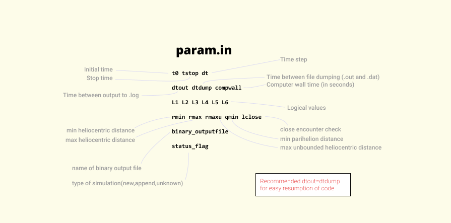

Getting Started
Download
The zip file for Swift can be downloaded onto your machine from
(link-Sept-17-2021)
. Once downloaded, it would be preferred to
transfer the files onto Sunnyvale. The steps to do just that:
- Connect to Sunnyvale using the vpn
(see here)
- Run Secure Copy command
$ scp ./jSwiftP.tar.gz username@bubbles.cita.utoronto.ca:/home/username
[cmd description: scp src dest]
- Log into Sunnyvale, navigate to file, and unzip using:
$ tar xvf jSwiftP.tar.gz
Remember to replace "username" with your username.
Compile
In order to run your first n-body simulation, we must prepare input files that include initial conditions and
some input parameters. But before we can run a simulation using SWIFT, we must compile the individual Fortran
files. Fortunately, this task is automated by the @make @makeall files located in the top jSwiftP directory.
Edit the @make file to set the top directory of jSwiftP (SWIFT_DIR) :
@make
...
Set SWIFT_DIR=/home/username/jSwiftP
...
Run the make file to compile everything:
$ ./\@makeall
“./” indicates current directory, “\@” is escape character for “@”. The command will compile all the subroutines in the package. Swift will create a library called "libswift.a" which contains all the compiled code needed to make Swift work. Swift is now ready to run simulations.
Editing files in terminal
You can edit files in Terminal using a text editor. Following example uses VIM
$ vim @make
Press ‘esc’ key
Press ‘i’ to start editing, should say “--INSERT--” at bottom. You can edit now.
Press ‘esc’ to switch to command mode. Commands begin with ‘:’. Common commands:
:q! Exit without save
:w save
:x exit with save
In this section we will create input files for our very first simulation. Swift requires 3 input files to start running a simulation:
- main.in - contains references to other 2 input files
- param.in - simulation parameters
- pl.in - initial positions of bodies
After preparing the 3 input files, we can run the simulation using:
$ module load gcc/6.3.0 # load the compiler
$ /home/maninder/jswiftP/imperfect/jswift2_symba7_imperfect_fix2_time >output.log
Glossary
Embryo: a body that is large enough to gravitationally interact with other bodies in addition to interacting with the star it is orbiting.
Planetesimal:a body that is too small to interact with other bodies of a similar size, and it only gravitationally interacts with the star it orbits or embryos it gets close to. (particle?)
Debris: small bodies created in collisions, typically also too small to interact with other debris particles.(particle?)
Giant collisions: a collision that occurs between two embryos. These collisions are the only ones that can have outcomes other than merging. Also known as 'imperfect' collisions
Perihelion: minimum distance from central body(star) during an orbit
Heliocentric distance:
Unbounded: a body that will leave the solar system, moving away from central body indefinitely
Units in the code
 The code requires units in which the gravitational constant G=1. This means we get to choose the units for 2 of the 3 measurements, the 3rd gets fixed to make.
The code requires units in which the gravitational constant G=1. This means we get to choose the units for 2 of the 3 measurements, the 3rd gets fixed to make.
If distance is 1 AU (~1.5e11 m), time is 1 year (~3.16e7 s), then mass is ~5.06e28 kg. This means 1 solar mass (~2e30 kg) is ~39.52 units of mass.
If distance is 1 AU (~1.5e11 m), time is 1 day (~8.64e4 s), then mass is ~6.77e33 kg. This means 1 solar mass (~2e30 kg) is ~2.96e-4 units of mass.
File 1: main.in
The main.in will be the file given to swift as stdin(Standard input). It contains file names to the other input files. It also contains threshold_mass.
main.in
name_param.in
name_pl.in
threshold_mass
*Anything more massive than threshold_mass is embryo, anything less massive is a planetesimal
File 2: param.in
This file contains all the parameters needed for SyMBA to run. It dictates events such as stop time, data dumps, threshold distances for tracking bodies etc.

Complete details on the input file can be found here.
A quick summary of the parameters:
- Simulation will stop on the first of tstop or compwall
- dtout and dtdump are timesteps between writing data to output files
- Line 3 is logical values (ignore for now). Use the values F T F F T F
- Line 4 dictates when bodies are too far or close, will stop tracking them. Set any parameter to -1 if you don’t want to use it
- status_flag just to tell if appending to existing output files or running new simulation
File 3: pl.in
This input file contains initial positions and velocities for the bodies.
pl.in
number_of_bodies
...
Mass ,hill radius, physical radius
x, y, z
vx, vy, vz
...
The first line has the number of bodies (INCLUDING the Sun), then 3 lines for each body giving mass, hill radius and physical radius on the first line, heliocentric x,y,z on the next and heliocentric vx,vy,vz on the third.
NOTE: The x,y,z and vx,vy,vz for the Sun MUST be 0!!
Once again, complete details on the input files can be found here.
Running SyMBA
Here are sample files to follow along with this example. You can modify these files to create your own input files.
first_main.in
first_param.in
first_pl.in
1.0E-6
first_param.in
0.0 1.0E+1 1.0E-4
1.0E-3 1.0E-3 300
F T F F T F
0.01E0 5.0 -1.0 0.01E0 T
test_output.bin
new
first_pl.in
4 4
3.9478419801531572E+01
0.0000000000000000E+00 0.0000000000000000E+00 0.0000000000000000E+00
0.0000000000000000E+00 0.0000000000000000E+00 0.0000000000000000E+00
1.1844568262466569E-04 3.0000875934192935E-02 4.0455139242112637E-05
1.9999979999910049E+00 5.9999979848434666E-06 6.9813171669949904E-14
-1.3328686918001801E-05 4.4428941695708950E+00 7.7543133538921895E-08
1.1844567997719839E-06 6.4634924405465085E-03 4.0455139242112637E-05
1.9696134440301909E+00 3.4729670692025144E-01 3.0361471416009781E-08
7.7150009964936039E-01 -4.3753899218157786E+00 -3.8250881801190886E-07
1.1855381291849292E-10 2.2507498807100156E-03 4.0455139242112637E-05
1.4982710850847134E+00 -2.6204798095275356E-01 -4.5736004107997060E-06
2.8369943598710593E-02 1.6236865623145853E+00 2.8338678670265550E-05
The input files are set to simulate 4 bodies(1 central mass) for 300 seconds or 1.0E+1 (ten) virtual years (whichever one comes first). Collision occurs after 3.9E-02 years (14 days) into the simulation. To run the code and view a summary:
$ module load gcc/6.3.0 # load the compiler
$ /home/username/jswiftP/imperfect/jswift2_symba7_imperfect_fix2_time < main.in >>output.log
$ less output.log
Congratulations! You have run your first simulation using the Swift subroutine package. In the next section, we will run the simulation on a node on the Sunnyvale computer cluster .